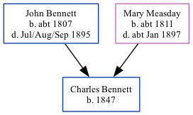

Charles Bennett 1847 -
[ Home ] | [ Calendar ] | [ Surnames Index ] | [ Family History ]The child of John Bennett (an agricultural laborer) and Mary Measday, Charles Bennett, the three times great-uncle of Nigel Horne, was born in Preston, Kent, England in 18471.
Throughout his life, he lived at his birthplace in 18511; and at Fourturnings in Preston on Mar 30, 18512 and on Apr 7, 18613.
Parents
- John was born c. 1807
- Mary was born c. 1811
Citations
- 1851 England Census Online publication - Provo, UT, USA: The Generations Network, Inc., 2005.Original data - Census Returns of England and Wales, 1851. Kew, Surrey, England: The National Archives of the UK (TNA): Public Record Office (PRO), 1851. Data imaged from the National
- 1851 England, Wales & Scotland Census - Findmypast (was age 3 and the son of the head of the household)
- 1861 England, Wales & Scotland Census - Findmypast (was age 13 and the son of the head of the household)
Family Tree
Generated by Ged2Site. Last updated on Jul 20, 2025